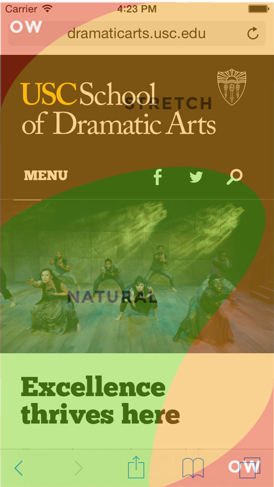
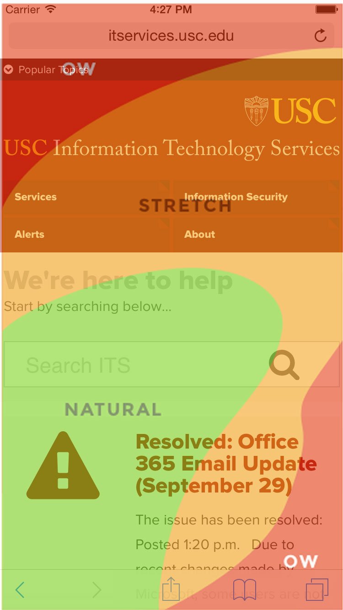

Mobile Usability Area
Introducing the 'OW' Zone
Created by Jason Cauwels / @troutacular
What is it?
There are usability studies done by Luke Wroblewski (and others) about the usability areas of the screen on a mobile device.
Goals
We, as a group, need to keep these usable areas in mind when creating our sites.
We need to evaluate highly used elements and their placements:
- Navigation / Menus
- Search
Some Examples
Business Services
Dramatic Arts

ITS


Pharmacy
Take Aways
- Experiment with different navigation placements
- When using interactions, be mindful of the device default functions
- Sliders and the forward/back history
- Fixed headers/footers with scrolling content
- It's a moving target - screen sizes change
- Test it (preferably on a device)
Thank You
Acknowledgements: Luke Wroblewski, Scott Hurff